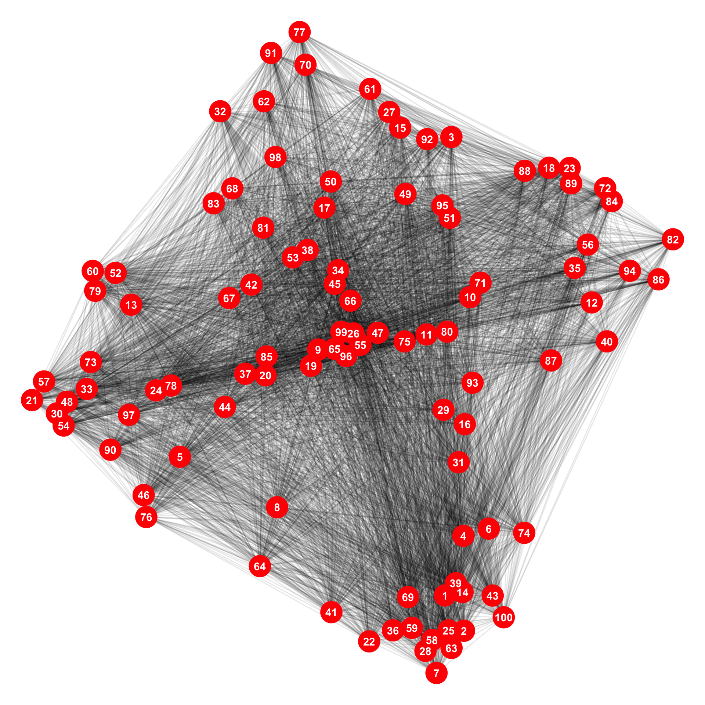
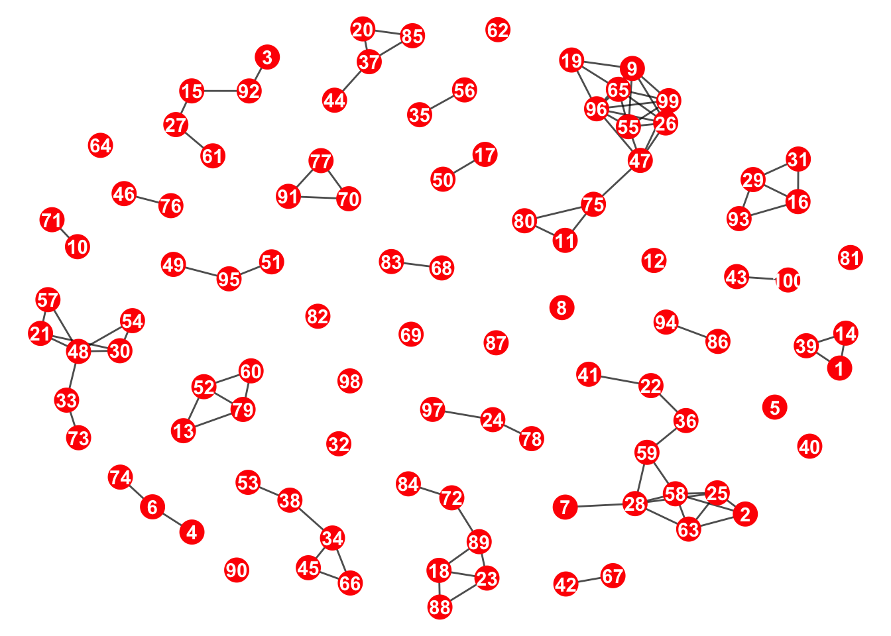
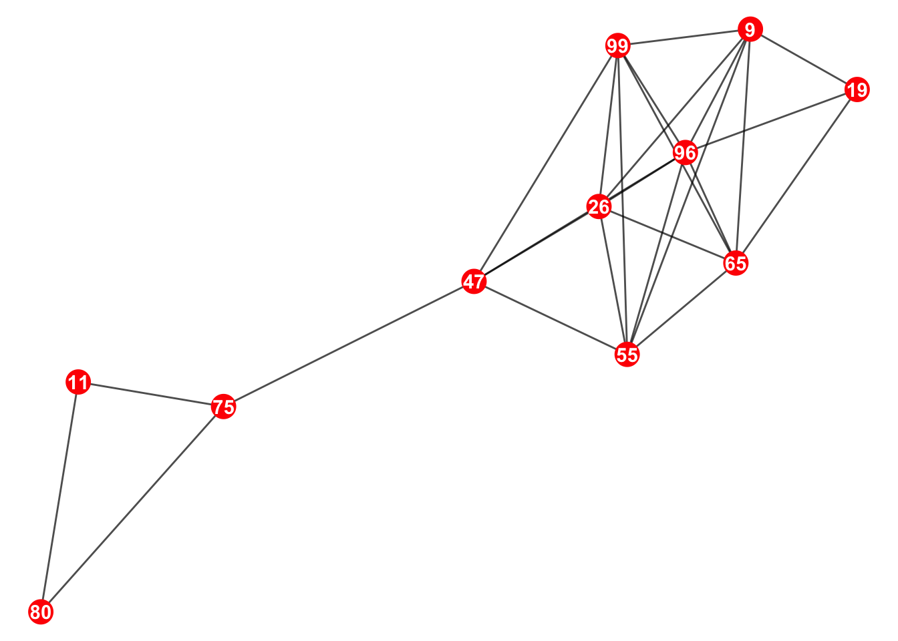
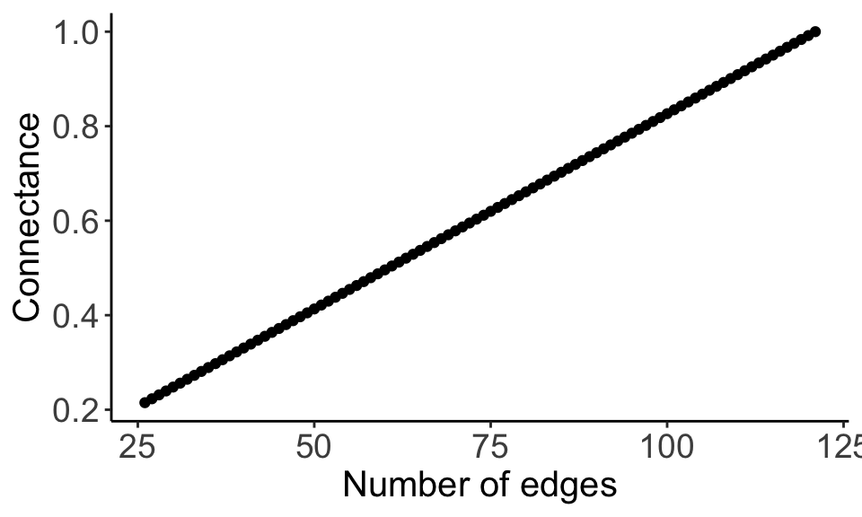

set.seed(24601) # Set the seed number
max_distance <- 20 # Set the maximum limit of the xy plane.This is a step by step guide for how we simulate the spatial network for tritonet.
1. Sample the x and y coordinates for the patches.
We use the sample function to randomly select both the x (longitude) and y (latitude) coordinates for each node. Using dist, we can then calculate the distance matrix for the pairwise distances between all nodes. The weight of the edges is then calculated using a negative exponential kernel.
xy <- seq(1, max_distance, length.out = 2000) ### All possible coordinates
x_coord <- sample(xy, 100, replace = TRUE) # x-coordinate
y_coord <- sample(xy, 100, replace = TRUE) # y-coordinate
xy_coord <- cbind(x_coord, y_coord) # xy-coordinates combined
NegExpDist <- as.matrix(exp(-dist(xy_coord))) # distance matrix with neg. exp kernel2. Convert the distance matrix into an adjacency matrix
Adj_graph <- graph_from_adjacency_matrix(NegExpDist,
mode = "undirected",
diag = FALSE,
weighted = TRUE
)
## Adding latitude and longitude
V(Adj_graph)$Long <- xy_coord[, 1] # x-coordinates
V(Adj_graph)$Lat <- xy_coord[, 2] # y-coordinatesWhen we plot the network, we can see that all nodes are connected to each other.

3. Reduce the edges
We are going to delete the majority of the edges. We assume a very low connectance (1%) and we back-calculate the number of edges that we must keep.
number_of_edges <- (0.01 * (100^2))We choose the top 100 highest-weight edges and delete all other edges.
### If the number of edges required for connectance is 100, then
### choose the 100 likeliest (highest weight) edges.
deleted_edges_graph <- delete_edges(
Adj_graph,
which(E(Adj_graph)$weight < sort(E(Adj_graph)$weight,
decreasing = T
)[number_of_edges])
)This is what it looks like now; we can see that there are components

4. Choose the component with the greatest number of nodes
Using the function decompose, we can split the network into smaller networks.
decomposed_components <- decompose(deleted_edges_graph)
# Count the number of nodes for each component and then give me
### the index for the largest component.
biggest_component_length <- which.max(lapply(
decomposed_components,
function(x) {
vcount(x)
}
))
### retrieve our network of interest
network_of_interest <- decomposed_components[[biggest_component_length]]This is the network of interest (the biggest component)

5. Calculate the new connectance
I create a function called connectance_calculator that calculates the connectance when given the number of nodes and edges.
### calculate the connectance by inputting the number of nodes and the number of
### edges
connectance_calculator <- function(nodes, edges) {
return(edges / (nodes^2))
}connectance_calculator(
vcount(network_of_interest),
ecount(network_of_interest)
)[1] 0.2148766. Create an empty list to populate with igraph objects
Let’s create a list:
adj_list <- NULL # For the actual igraph
adj_info_list <- NULL # For information about each igraphLet’s manually add the first one in.
adj_list[[1]] <- network_of_interest #put the igraph object in.
adj_info_list[[1]] <- c(
num_nodes = vcount(network_of_interest),
num_edges = ecount(network_of_interest),
connectance = connectance_calculator(
vcount(network_of_interest),
ecount(network_of_interest)
)
)7. Add edges one by one
First, we calculate the new distance matrix of the component network of interest:
# Get the x-y coordinates
xy_coord_interest <- cbind(
V(network_of_interest)$Long,
V(network_of_interest)$Lat
)
# Calculate new distance matrix
DispMat_interest <- as.matrix(exp(-dist(xy_coord_interest)))We get the edge list of the network of interest.
edgelist_of_interest <- as_edgelist(network_of_interest, names = F)
### The columns show the patches that are connected by an edge
head(edgelist_of_interest) [,1] [,2]
[1,] 1 3
[2,] 1 4
[3,] 4 5
[4,] 1 6
[5,] 4 6
[6,] 5 6By melting the distance matrix, we can then get a data.frame that shows the edge connections between the different nodes as well as the edge weights.
melted_edge_list <- melt(DispMat_interest)
### patch1, patch2, and weight are the new column names
colnames(melted_edge_list) <- c("patch1", "patch2", "weight")We want to remove rows from melted_edge_list that already exist in the network_of_interest. This is because we’re interested in adding new edges that do not currently exist in the network.
new_distance <- subset(
melted_edge_list,
!(paste0(
melted_edge_list$patch1, "-",
melted_edge_list$patch2
)
%in%
paste0(
edgelist_of_interest[, 1],
"-", edgelist_of_interest[, 2]
)
)
)Let us order the new data.frame by the edge weight:
new_distance <- new_distance[order(new_distance$weight, decreasing = TRUE), ]
head(new_distance) patch1 patch2 weight
44 11 4 0.7933777
76 10 7 0.7360045
39 6 4 0.6963310
7 7 1 0.5880216
66 11 6 0.5739138
20 9 2 0.5385340We’re going to loop this, but just to how what is happening. We add an edge between patch1 and patch2 as well as its weight.
network_of_interest_added <- network_of_interest + edge(
c(
new_distance[1, "patch1"],
new_distance[1, "patch2"]
),
weight = new_distance[1, "weight"]
)Again, we’re going to automate this, but we are going to add the information we need to the lists that we made earlier.
adj_list[[2]] <- network_of_interest_added
adj_info_list[[2]] <- c(
num_nodes = vcount(network_of_interest_added),
num_edges = ecount(network_of_interest_added),
connectance = connectance_calculator(
vcount(network_of_interest_added),
ecount(network_of_interest_added)
)
)8. Loop through.
for (i in seq(2, nrow(new_distance))) {
network_of_interest_added <- network_of_interest_added + edge(
c(
new_distance[i, "patch1"],
new_distance[i, "patch2"]
),
weight = new_distance[i, "weight"]
)
adj_list[[i + 1]] <- network_of_interest_added
adj_info_list[[i + 1]] <- c(
num_nodes = vcount(network_of_interest_added),
num_edges = ecount(network_of_interest_added),
connectance = connectance_calculator(
vcount(network_of_interest_added),
ecount(network_of_interest_added)
)
)
}9. Check that there is a positive relationship with edge number and connectance
adj_info_df <- data.frame(do.call(rbind, adj_info_list))ggplot(adj_info_df, aes(x = num_edges, y = connectance)) +
geom_point() +
ylab("Connectance") +
xlab("Number of edges") +
theme_classic() +
theme(
axis.text = element_text(size = 14),
axis.title = element_text(size = 15)
)
We can see that by increasing the number of edges, we also increase the connectance.
10. Creating the full function
Going to be a huge function so break it into much smaller sub-functions.
The function simulate_xy_coordinates corresponds to Step 1 (Sample x-y coordinates for the patches). The output should be a list with the first element being the data.frame holding the x and y coordinates of the nodes and the second element being the distance matrix.
simulate_xy_coordinates <- function(seed = 24601, max_distance) {
set.seed(seed)
xy <- seq(1, max_distance, length.out = 2000) ### List of all possible coordinates
x_coord <- sample(xy, 100, replace = TRUE) # x-coordinate
y_coord <- sample(xy, 100, replace = TRUE) # y-coordinate
xy_coord <- cbind(x_coord, y_coord) # xy-coordinates combined
NegExpDist <- as.matrix(exp(-dist(xy_coord))) # distance matrice with kernel
return(list(xy_coord, NegExpDist))
}The function retrieve_biggest_component corresponds to Step 2 (Convert the distance matrix into an adjacency matrix), Step 3 (Reduce the edges), and Step 4 (Choose the components with the greatest number of nodes). The input takes the list element from simulate_xy_coordinate and returns the network of interest.
retrieve_biggest_component <- function(list) {
Adj_graph <- graph_from_adjacency_matrix(list[[2]],
mode = "undirected",
diag = FALSE,
weighted = TRUE
)
## Adding latitude and longitude
V(Adj_graph)$Long <- list[[1]][, 1] # x-coordinates
V(Adj_graph)$Lat <- list[[1]][, 2] # y-coordinates
number_of_edges <- (0.01 * (100^2))
deleted_edges_graph <- delete_edges(
Adj_graph,
which(E(Adj_graph)$weight < sort(E(Adj_graph)$weight,
decreasing = T
)[number_of_edges])
)
decomposed_components <- decompose(deleted_edges_graph)
# Count the number of nodes for each componenent and then give me
### the index for the largest.
biggest_component_length <- which.max(lapply(
decomposed_components,
function(x) {
vcount(x)
}
))
### retrieve our network of interest
network_of_interest <- decomposed_components[[biggest_component_length]]
return(network_of_interest)
}The function recalculate_distance_matrix correspond to the first half of step 5 (Add edges one by one). You input the network of interest and should return a data.frame that has all the possible edges (that are not in the current network) sorted in decreasing order of edge weight.
recalculate_distance_matrix <- function(network) {
# Get the x-y coordinates
xy_coord_interest <- cbind(
V(network)$Long,
V(network)$Lat
)
# Calculate new distance matrices
DispMat_interest <- as.matrix(exp(-dist(xy_coord_interest)))
edgelist_of_interest <- as_edgelist(network, names = F)
melted_edge_list <- melt(DispMat_interest)
colnames(melted_edge_list) <- c("patch1", "patch2", "weight")
new_distance <- subset(
melted_edge_list,
!(paste0(
melted_edge_list$patch1, "-",
melted_edge_list$patch2
)
%in%
paste0(
edgelist_of_interest[, 1],
"-", edgelist_of_interest[, 2]
)
)
)
new_distance_df <- new_distance[order(new_distance$weight, decreasing = TRUE), ]
return(new_distance_df)
}The full function thus looks like this:
simulate_spatial_network <- function(seed, max_distance) {
list_xy_coord <- simulate_xy_coordinates(seed, max_distance)
network_interest <- retrieve_biggest_component(list_xy_coord)
possible_edges_df <- recalculate_distance_matrix(network_interest)
adj_list <- NULL
adj_info_list <- NULL
### Manually add the first network in
adj_list[[1]] <- network_interest
adj_info_list[[1]] <- c(
num_nodes = vcount(network_interest),
num_edges = ecount(network_interest),
connectance = connectance_calculator(
vcount(network_interest),
ecount(network_interest)
)
)
### For loop time
for (new_edge in seq(1, nrow(possible_edges_df))) {
network_interest <- network_interest + edge(c(new_distance[new_edge, "patch1"], new_distance[new_edge, "patch2"]),
weight = new_distance[new_edge, "weight"]
)
adj_list[[new_edge + 1]] <- network_interest
adj_info_list[[new_edge + 1]] <- c(
num_nodes = vcount(network_interest),
num_edges = ecount(network_interest),
connectance = connectance_calculator(
vcount(network_interest),
ecount(network_interest)
)
)
}
return(list(adj_list, do.call(rbind, adj_info_list)))
}11. Testing the full function
simulated_list <- simulate_spatial_network (24601, 20)print(simulated_list[[2]]) num_nodes num_edges connectance
[1,] 11 26 0.2148760
[2,] 11 27 0.2231405
[3,] 11 28 0.2314050
[4,] 11 29 0.2396694
[5,] 11 30 0.2479339
[6,] 11 31 0.2561983
[7,] 11 32 0.2644628
[8,] 11 33 0.2727273
[9,] 11 34 0.2809917
[10,] 11 35 0.2892562
[11,] 11 36 0.2975207
[12,] 11 37 0.3057851
[13,] 11 38 0.3140496
[14,] 11 39 0.3223140
[15,] 11 40 0.3305785
[16,] 11 41 0.3388430
[17,] 11 42 0.3471074
[18,] 11 43 0.3553719
[19,] 11 44 0.3636364
[20,] 11 45 0.3719008
[21,] 11 46 0.3801653
[22,] 11 47 0.3884298
[23,] 11 48 0.3966942
[24,] 11 49 0.4049587
[25,] 11 50 0.4132231
[26,] 11 51 0.4214876
[27,] 11 52 0.4297521
[28,] 11 53 0.4380165
[29,] 11 54 0.4462810
[30,] 11 55 0.4545455
[31,] 11 56 0.4628099
[32,] 11 57 0.4710744
[33,] 11 58 0.4793388
[34,] 11 59 0.4876033
[35,] 11 60 0.4958678
[36,] 11 61 0.5041322
[37,] 11 62 0.5123967
[38,] 11 63 0.5206612
[39,] 11 64 0.5289256
[40,] 11 65 0.5371901
[41,] 11 66 0.5454545
[42,] 11 67 0.5537190
[43,] 11 68 0.5619835
[44,] 11 69 0.5702479
[45,] 11 70 0.5785124
[46,] 11 71 0.5867769
[47,] 11 72 0.5950413
[48,] 11 73 0.6033058
[49,] 11 74 0.6115702
[50,] 11 75 0.6198347
[51,] 11 76 0.6280992
[52,] 11 77 0.6363636
[53,] 11 78 0.6446281
[54,] 11 79 0.6528926
[55,] 11 80 0.6611570
[56,] 11 81 0.6694215
[57,] 11 82 0.6776860
[58,] 11 83 0.6859504
[59,] 11 84 0.6942149
[60,] 11 85 0.7024793
[61,] 11 86 0.7107438
[62,] 11 87 0.7190083
[63,] 11 88 0.7272727
[64,] 11 89 0.7355372
[65,] 11 90 0.7438017
[66,] 11 91 0.7520661
[67,] 11 92 0.7603306
[68,] 11 93 0.7685950
[69,] 11 94 0.7768595
[70,] 11 95 0.7851240
[71,] 11 96 0.7933884
[72,] 11 97 0.8016529
[73,] 11 98 0.8099174
[74,] 11 99 0.8181818
[75,] 11 100 0.8264463
[76,] 11 101 0.8347107
[77,] 11 102 0.8429752
[78,] 11 103 0.8512397
[79,] 11 104 0.8595041
[80,] 11 105 0.8677686
[81,] 11 106 0.8760331
[82,] 11 107 0.8842975
[83,] 11 108 0.8925620
[84,] 11 109 0.9008264
[85,] 11 110 0.9090909
[86,] 11 111 0.9173554
[87,] 11 112 0.9256198
[88,] 11 113 0.9338843
[89,] 11 114 0.9421488
[90,] 11 115 0.9504132
[91,] 11 116 0.9586777
[92,] 11 117 0.9669421
[93,] 11 118 0.9752066
[94,] 11 119 0.9834711
[95,] 11 120 0.9917355
[96,] 11 121 1.0000000